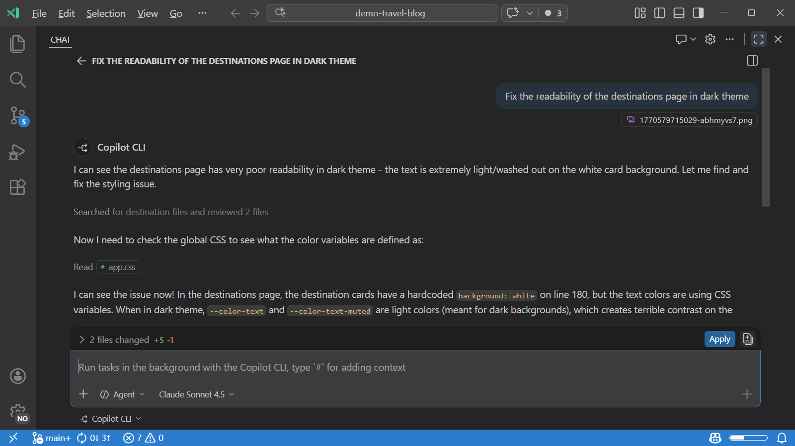
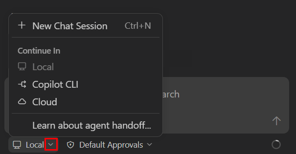
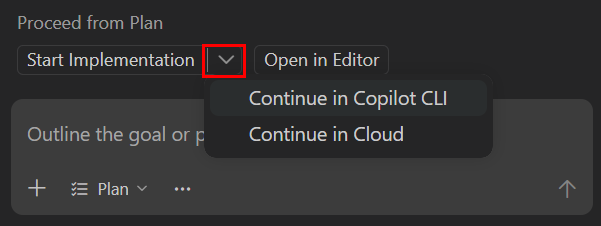
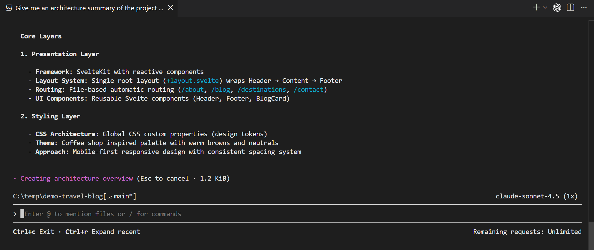
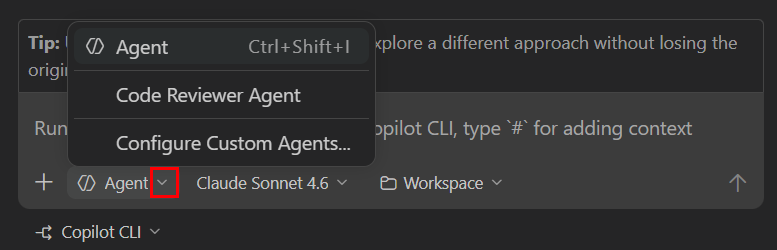

Visual Studio Code 中的 Copilot CLI 会话
Visual Studio Code 支持使用 GitHub Copilot CLI 在后台运行代理会话。你可以从 VS Code 的统一聊天视图中启动、监控和管理你的 Copilot CLI 会话，而代理则在你的本地机器上自主运行，同时你可以在编辑器中继续其他工作。你可以并行运行多个 Copilot CLI 会话来同时处理独立的任务。
要启动一个 Copilot CLI 会话，你可以创建一个新会话或将本地代理会话移交给 Copilot CLI，同时传递现有上下文。
本文涵盖了 Copilot CLI 代理的关键功能，以及如何启动和管理来自 Copilot CLI 的后台会话。

[!TIP]
如果你主要跨多个项目使用代理工作，你也可以在代理窗口中管理你的 Copilot CLI 会话，这是一个以代理为先的界面，与主 VS Code 窗口共享会话。
[!TIP]
像 OpenAI Codex 这样的第三方提供者也提供后台功能。详细了解第三方代理。
通过实践教程体验 VS Code 中的本地、后台和云端代理。
什么是 Copilot CLI 会话？
Copilot CLI 会话在你的本地机器上独立于后台运行，并使用 Copilot CLI 代理框架。VS Code 使用 Copilot SDK 与这些代理集成，以启动、停止和监控你的后台会话的进度。VS Code 会自动为你安装和配置 Copilot CLI。
Copilot SDK 会话在 VS Code 外部运行，即使你关闭 VS Code 窗口也会继续在后台运行。这种行为不同于在编辑器内部使用 VS Code 代理框架并在 VS Code 停止时停止运行的本地代理。
你可以从统一的聊天视图中与 Copilot CLI 会话进行交互。当后台会话需要你的输入或需要权限来执行操作时，你可以在聊天中完成。代理状态指示器也会在会话需要输入时提供提示。
由于 Copilot CLI 会话在后台运行，它们非常适合具有明确定义范围、拥有所有必要上下文并且不需要频繁用户交互的任务。示例包括根据计划实现功能、创建概念验证的多个变体，或实现明确定义的修复或功能。
Copilot CLI 支持聊天中的斜杠命令，包括可复用提示词、代理技能、钩子、管理长对话的 /compact、运行深度研究的 /research，以及切换工具自动审批的 /yolo 或 /autoApprove。在 Copilot CLI 会话的聊天输入中键入 / 以查看可用命令。
隔离模式
Copilot CLI 支持两种类型的隔离模式来管理代理所做的更改如何应用到你的代码库：工作树和文件夹隔离。你可以在创建新的 Copilot CLI 会话时选择隔离模式。
若要隔离 Copilot CLI 代理的更改并防止干扰你的当前工作，请使用工作树隔离。在此模式下，VS Code 会在一个单独的文件夹中为 Copilot CLI 会话创建一个 Git 工作树。代理所做的所有更改都会应用到工作树中，使它们与你的主工作区分开，直到你准备审查并应用它们。
如果你派生一个使用工作树隔离的 Copilot CLI 会话，派生后的会话将继续使用与原始会话相同的工作树。VS Code 仅在最后一个关联的会话被删除或归档后才移除共享的工作树。
如果你希望 Copilot CLI 会话的更改直接应用到当前工作区，你可以选择文件夹隔离。在此模式下，代理直接在你的当前工作区中操作，更改会就地应用。
[!NOTE]
要使用 Git 工作树和工作树隔离，你的工作区需要是一个 Git 仓库。
权限与审批
Copilot CLI 会话支持与本地代理相同的权限级别。可用的权限级别取决于你选择的隔离模式：
- 工作树隔离：权限级别自动设置为跳过审批，且无法更改。因为代理在代码库的隔离副本（Git 工作树）上操作，所有工具调用都会自动批准，无需确认对话框。
- 文件夹隔离：所有三种权限级别都可用（默认审批、跳过审批和自动驾驶），与本地代理会话一样。从聊天输入区域的权限选择器中选择一个级别。
创建 Copilot CLI 会话
在 VS Code 中创建新的 Copilot CLI 会话：
- 使用以下任一选项创建新会话
- 打开聊天视图 (
kb(workbench.action.chat.open))，然后从会话目标下拉菜单中选择 Copilot CLI- 选择顶部的新建聊天图标，然后选择新建 Copilot CLI 会话
- 从命令面板 (
kb(workbench.action.showCommands)) 运行聊天: 新建 Copilot CLI 命令
- 打开聊天视图 (
如果使用工作树隔离，代理会在每个回合结束时自动将更改提交到工作树，因此会话历史记录会与提交历史记录保持一致。
[!TIP]
你可以通过右键单击会话列表中的会话并选择在新窗口中打开工作树来打开会话的工作树。你还可以在源代码管理视图仓库资源管理器 (scm.repositories.explorer) 中查看工作树。
- 提交你的提示词以启动代理。可选地，添加额外的上下文或选择特定的语言模型和自定义代理。
- 在聊天视图中跟踪会话状态。
[!TIP]
你可以创建多个 Copilot CLI 会话来并行处理不同的任务。
将本地会话移交给 Copilot CLI
对于复杂的任务，首先在 VS Code 中与本地代理交互以明确需求，然后将任务移交给 Copilot CLI 进行后台自主执行可能会很有帮助。这在以下场景中很有用：使用计划代理创建一个计划，然后将该计划的实现移交给 Copilot CLI。
当将本地代理对话移交给 Copilot CLI 会话时，完整的对话历史记录和上下文会传递到后台会话。
将本地代理会话移交给 Copilot CLI：
- 打开聊天视图 (
kb(workbench.action.chat.open)) - 与本地代理交互，直到你准备移交任务
- 要移交给 Copilot CLI，你有以下选项：
- 打开会话目标下拉菜单，然后选择 Copilot CLI

- 如果你正在使用计划代理，选择开始实现下拉菜单，然后选择在 Copilot CLI 中继续以在 Copilot CLI 会话中运行实现

Copilot CLI 会话会自动启动，并携带完整的对话历史记录和上下文。
远程控制 Copilot CLI 会话
"/remote on" 命令允许你从 github.com 或 GitHub Mobile 应用程序远程控制 Copilot CLI 会话。通过远程控制，你可以从任何地方监控和操纵正在进行的 Copilot CLI 会话，让你更灵活地持续推进工作而无需被绑在机器旁。你可以在 VS Code 和 GitHub 之间保持完整的会话上下文和历史记录同步。
[!TIP]
远程控制是远程运行代理会话的两种方式之一。你还可以通过 SSH 或开发隧道将代理窗口连接到远程机器。详细了解远程代理会话。
当启用远程控制时，VS Code 会将会话历史记录、工具活动和状态更新实时流式传输到链接的 GitHub 任务页面。你在一个地方执行的操作会反映在另一个地方。如果会话需要审批工具调用或回答问题，提示会在两个地方显示，你可以从任一位置回复。
要为 Copilot CLI 会话使用远程控制：
- 从聊天视图启动或恢复 Copilot CLI 会话。
- 在聊天输入中输入
"/remote on"来启用远程控制并创建链接的 GitHub 任务页面。 - 选择在 GitHub 上打开以打开链接的任务页面，或扫描二维码以在移动设备上打开。
随时运行 "/remote" 以检查当前的远程控制状态。"/remote" 命令仅显示状态，不会启用或禁用远程控制。
要停止将会话镜像到 GitHub，在聊天输入中输入 "/remote off"。
要在 VS Code 中禁用 Copilot CLI 会话的远程控制支持，请禁用 setting(github.copilot.chat.cli.remote.enabled) 设置。
[!NOTE]
远程控制要求在 VS Code 中进行 GitHub 身份验证，并且工作区需要映射到一个 GitHub 仓库。如果需要额外的 GitHub 权限，VS Code 会在启用远程控制之前提示你授予这些权限。
从终端使用 Copilot CLI
除了从聊天视图启动 Copilot CLI 会话外，你还可以直接从 VS Code 终端使用 Copilot CLI。

打开 Copilot CLI 终端
VS Code 注册了一个 GitHub Copilot CLI 终端配置文件，你可以用它来打开一个专用的 Copilot CLI 终端。你可以通过多种方式打开 Copilot CLI 终端：
- 选择终端面板中 + 按钮旁边的下拉菜单，然后选择 GitHub Copilot CLI
- 从命令面板运行聊天: 新建 Copilot CLI 会话命令以在面板中打开 Copilot CLI 终端，或运行聊天: 在旁边新建 CLI 会话以在当前编辑器旁边的编辑器标签页中打开它
- 从命令面板 (
kb(workbench.action.showCommands)) 运行终端: 创建新终端(带配置文件) 命令，然后选择 GitHub Copilot CLI - 在任何 VS Code 集成终端中输入
copilot直接启动 Copilot CLI
Copilot CLI 终端支持以下 shell：
- macOS 和 Linux 上的 bash 和 zsh
- Windows 上的 PowerShell 和命令提示符
从终端启动和恢复会话
当你从 Copilot CLI 终端启动一个新会话时，VS Code 会自动检测该会话并在聊天视图会话列表中显示它。然后你可以从终端或聊天视图中跟踪进度、发送后续提示词或审查更改。
要在终端中恢复现有的 Copilot CLI 会话，右键单击会话列表中的会话并选择在终端中恢复。
VS Code 会自动处理 Copilot CLI 终端的身份验证，因此你不需要单独登录。
多仓库工作区
如果你的工作区包含多个 Git 仓库，VS Code 会在你启动 Copilot CLI 会话时在聊天输入中显示一个仓库选择器。使用此选择器来选择应在哪个仓库中创建工作树。
会话启动后，该会话的仓库选择器将变为禁用状态。工作树会出现在源代码管理仓库视图中所选仓库下的工作树节点中。
[!TIP]
要查看工作区中的所有仓库，请启用 setting(scm.repositories.explorer) 设置并打开源代码管理视图。
在 Copilot CLI 中使用自定义代理
自定义代理允许你在 VS Code 中为代理定义自定义角色和人设。例如，你可以创建一个用于执行代码审查的自定义代理。自定义代理可以定义特定的指令和行为。
创建 Copilot CLI 会话时，你可以选择一个自定义代理来处理任务。自定义代理会根据定义的行为进行操作。
要在 Copilot CLI 中使用自定义代理：
- 使用
setting(github.copilot.chat.cli.customAgents.enabled)设置启用 Copilot CLI 的自定义代理 - 使用命令面板 (
kb(workbench.action.showCommands)) 中的聊天: 新建自定义代理命令在工作区中创建一个自定义代理 - 创建一个新的 Copilot CLI 会话，并从代理下拉菜单中选择自定义代理

- 输入提示词，注意自定义代理被用于处理任务
[!NOTE]
目前，仅在工作区中定义的自定义代理可用于 Copilot CLI 会话。详细了解创建自定义代理。
使用研究代理运行深度研究
[!NOTE]
VS Code 中的研究代理目前处于预览阶段，仅在 Insiders 中的 Copilot CLI（本地）会话中可用。
研究代理对某个主题执行深度研究，并生成一份详尽、引用严谨的 Markdown 报告。它从你的代码库、相关 GitHub 仓库以及网上收集并综合信息，这在调查不熟悉的代码、比较不同方法或理解库或 API 如何工作时非常有用。
与普通聊天回复（针对快速回答优化）不同，研究代理针对深度进行了优化。它只有只读访问权限，并且生成报告而不更改你的代码，因此最适合用于调查而不是实现。
要运行研究代理，在 Copilot CLI 会话的聊天输入中键入 /research 后跟你想要研究的主题，例如：
/research How does the authentication flow work in this codebase?[!TIP]
对于直接为实现计划提供素材的研究，请使用计划代理，它会在提出计划之前研究你的任务。要在会话内委派专注的研究而不生成独立报告，请使用子代理。
有关研究代理的更多信息，请参阅 GitHub 文档中的使用 GitHub Copilot CLI 进行研究。
Copilot CLI 会话的限制
- Copilot CLI 会话无法访问所有 VS Code 内置工具。你可以显式地在聊天输入中添加上下文。
- 无法访问扩展提供的工具，并且仅限于通过 CLI 工具可用的模型。
- 目前只能访问不需要身份验证的本地 MCP 服务器。
相关资源
- 代理概览：了解不同的代理类型以及如何在代理之间移交任务
- 自定义代理：创建自定义代理角色和人设
- 使用 GitHub Copilot CLI 进行研究：在 GitHub 文档中了解有关研究代理的更多信息
- GitHub Copilot CLI 文档